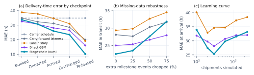
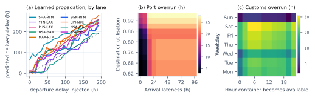

Predicting Shipment ETA and Delay Propagation
Summary. I model a shipment as a chain of five stages (origin, ocean, destination port, customs, last mile) and learn one gradient-boosted model per stage that predicts the stage's overrun from (i) how late the shipment enters the stage and (ii) what is observable at prediction time. Chaining the stage models makes delay propagate: it is amplified when it breaks a buffer (missed berth window, transshipment connection, cut-off) and absorbed when slack exists. Monte-Carlo sampling through the chain gives an ETA window (P10–P90) and P(late). Explanations are exactly additive: observed delay + on-time reference + knock-on + factor SHAP = forecast. On a temporal hold-out the stage-chain cuts ETA error from 34.9h (carrier schedule) to 25.9h once the vessel has arrived, and from 34.9h to 10.1h after customs release. The stage it blames is the true root-cause stage 52% of the time, against 12% for lane history.
1 · Problem framing and definitions
Promised delivery is the carrier schedule plus the planned port, customs and inland buffers, fixed at booking. Delivery delay = actual proof-of-delivery − promised delivery (hours), and a shipment is late if the delay exceeds 24h. The journey has five milestones (departed, arrived, discharged, released, delivered). The overrun of stage k is its actual duration minus its scheduled duration, so the five overruns sum exactly to the delivery delay. That identity drives the design: predicting ETA becomes predicting the overruns of the stages still ahead, given how late the shipment is now. ETA = promised delivery + P50 of the predicted delay, reported with a P10–P90 window. Forecasts are issued at five checkpoints: at booking (48h before sailing), then at each milestone up to customs release. They use only information reported by that time: congestion and weather as observed then, plus seasonal norms, never the realised future values. This rules out the usual leakage in ETA demos.
2 · Data: a mechanistic simulator (synthetic, with ground truth)
Public AIS datasets have vessel positions but not door-to-door milestones, customs events or root causes, so I built a simulator (eta/simulate.py) whose stage durations come from logistics mechanisms rather than independent noise. This also makes explanations testable. There are 300 shipments on 9 lanes (Asia–Europe, trans-Pacific, India–Middle East, 2 lanes with transshipment at Colombo and Singapore; rail or truck for the last mile). Daily port utilisation and sea-region weather are shared AR(1) time series with seasonality (US peak season, the pre-Lunar-New-Year rush, the SW monsoon, typhoons), so ships calling the same port in the same week share congestion. How delay is introduced:
- Origin: rollover to next week's sailing (+168h), with probability rising with origin utilisation and falling with carrier reliability; departure slippage scales with congestion.
- Ocean: weather adds sea time. Late vessels steam faster and recover up to ~4.5% of transit (absorption). At a hub, a box that misses its connection waits for the next sailing, 56–84h later (amplification). A Red Sea / Cape diversion adds +240h in Mar–May; it is in the schedule only for bookings made after the first month.
- Port: berth wait ∝ u/(1−u) (M/M/1-style). A vessel more than 18h late loses its berth window and re-queues (wait ×1.7 + 10h): the congestion × lateness interaction. Discharge time scales with vessel size and yard congestion. Strikes hit Hamburg and New York.
- Customs: base time by commodity × port speed × congestion; incomplete documents add 24–72h; an inspection, more likely for risky commodities, incomplete docs or new importers, adds 48–120h; releases happen only Mon–Fri 08–18 outside holidays.
- Last mile: pre-booked truck slots absorb early releases; a missed slot means re-booking in a congested market. Rail ramps depart only Tue/Fri at 20:00, a fixed-day cut-off that turns hours of lateness into days.
Ground truth = the simulated actual timestamps, plus the per-stage overruns and a log of triggered mechanisms. Missing data: 3–20% of milestone events are blanked, as in real EDI/AIS feeds; delivery is always reported. Result: 49% of shipments are late, median delay 16h, P90 172h. That is roughly in line with published door-to-door reliability, though not calibrated to it. Of the delay hours in late shipments, 17% arise at origin, 14% at sea, 24% at the port, 30% in customs and 14% on the last mile. Most delay is created after the vessel leaves, so tracking the vessel alone is not enough.
3 · Features
Each stage model sees: (a) propagation state: lateness_in (hours late entering the stage) and the forecast horizon; (b) timing interactions computed from the predicted stage start: weekday, hour, holiday and announced-strike overlap. Shifting lateness changes these, so the chain captures "+10h late pushes discharge into Friday night and customs into Monday" without any hand-coded rule; (c) as-of conditions: origin/hub/destination utilisation now, the seasonal norm at the scheduled arrival, current and climatological lane weather; (d) shipment attributes: carrier reliability, vessel size, commodity base time and inspection risk, document completeness, new importer, hazmat, transshipment, inland mode, diversion flags. Trees learn interactions such as congestion × lateness directly (Fig. 2b).
4 · Models
Stage-chain (proposed). Five HistGradientBoostingRegressors, one per stage, each trained on rows (shipment × every checkpoint before that stage), so a model learns how much a signal observed h hours ahead is worth. At inference the predicted lateness out of stage k becomes lateness_in of stage k+1. For uncertainty, 400 Monte-Carlo paths add out-of-fold residuals at each stage (pooled by horizon) and push them through the remaining stages, so uncertainty propagates non-linearly along with the delay. The residual scale (1.0) is chosen on a later slice of the training period. When a milestone event is missing, the chain restarts from the last reported milestone and forecasts the unreported stages. Baselines: carrier schedule (delay = 0); carry-forward (last observed lateness); lane history (last lateness + the lane's median remaining overrun); Direct GBM, a single model mapping (shipment, checkpoint) features straight to final delay (absolute loss) plus a classifier for P(late). The direct model has the same information but no stage structure. It isolates the value of modelling propagation explicitly.
Explanations. For each remaining stage: knock-on = forecast at the actual entry lateness − forecast had the shipment entered on time (positive = amplified, negative = absorbed). The on-time forecast is split with TreeSHAP into factor groups (destination congestion, customs risk, calendar, weather, carrier, disruptions…). Summed along the chain, observed delay + on-time reference + Σ knock-on + Σ factor contributions equals the forecast exactly (checked in code). The narrative and recommended actions are templated from these numbers, not generated by an LLM, so they cannot invent causes. One action, completing customs documents, is a re-run counterfactual with its estimated hours saved.
5 · Evaluation
Design. Temporal split: the first 210 departures (Jan–Aug) train, the last 90 (Aug–Nov) test, as in deployment. The test window contains US peak season and a New York strike the models barely saw, so it is a hard test. Metrics: MAE of delivery time (h), share within ±24h, AUC and Brier for P(late > 24h), P10–P90 coverage, and a 95% bootstrap CI on MAE differences (resampling shipments).
| MAE (h) at checkpoint → | Booked | Departed | Arrived | Discharged | Released |
|---|
| Carrier schedule | 34.9 | 34.9 | 34.9 | 34.9 | 34.9 |
| Carry-forward lateness | 34.9 | 32.3 | 31.2 | 28.5 | 20.0 |
| Lane history | 38.9 | 37.7 | 34.6 | 31.0 | 19.2 |
| Direct GBM | 32.6 | 30.6 | 28.1 | 26.5 | 16.0 |
| Stage-chain (ours) | 33.8 | 30.7 | 25.9 | 23.5 | 10.1 |

Figure 1. (a) Delivery-time MAE on the hold-out. (b) MAE averaged over in-transit checkpoints as extra milestone events are dropped. (c) Full pipeline re-run on larger simulated datasets (same world and seed, more shipments; 100 Monte-Carlo paths).
- Accuracy improves as the journey unfolds. The stage-chain is best from the arrival checkpoint on: 25.9h vs 34.9h for the schedule (−26%) and 10.1h vs 16.0h for the Direct GBM after release. The gain over lane history at arrival is +8.7h [95% CI 1.5, 15.7]; over the Direct GBM it is +2.2h [-2.0, 6.2]. ±24h hit-rate at arrival: 68%.
- At booking nothing works well (33.8h chain, 32.6h direct, 34.9h schedule; difference CI [-7.3, 5.3]). Most delay comes from inspections, berth queues and missed slots that have not happened yet. A booking-time ETA should be treated as a risk score (AUC 0.79) rather than a date.
- Risk: AUC 0.82 and Brier 0.167 at arrival (Direct GBM classifier: 0.75 / 0.237), rising to 0.98 after release. P10–P90 coverage is 89–96%. The intervals are honest but conservative (target 80%).
- Explanations are checked against ground truth. For late shipments, the stage with the largest forecast overrun is the stage with the largest true overrun 52% of the time after departure (n=33; lane-history 12%, chance 25%) and 73% after discharge (lane 30%, chance 46%).
- Missing data: with 75% of events dropped, chain MAE goes 22.5→31.9h, Direct GBM 25.0→27.9h, carry-forward 31.7h. The direct model degrades more gracefully, partly because the evaluation clock coincides with the (unreported) event and the direct model reads the clock (see limitations). The chain ignores it, so this comparison is biased in the direct model's favour.
- Data volume (Fig. 1c): error at arrival does not keep falling with more shipments. Most of what remains is noise about events that have not happened yet. The chain beats lane history at every size, but with 2,400 shipments the Direct GBM catches up: a flexible model given enough data learns propagation implicitly. The chain's advantages are data efficiency at realistic history sizes and, more importantly, a structure that supports stage-level explanations and what-if re-forecasting.

Figure 2. (a) One test shipment per lane, with departure delay injected and the chain re-run. Above y = x, delay is amplified downstream: transshipment lanes jump once the hub buffer is exhausted, and rail lanes step at ramp cut-offs. Below it, delay is absorbed on long direct lanes. (b) Port-stage response: lateness costs far more in a congested port. (c) Customs response: Friday-evening and weekend arrivals wait for Monday. The model learned (b) and (c) from data; it was never given the rules.
6 · Assumptions and limitations
- Synthetic data. The model recovers mechanisms that I wrote, so the scores show the method can learn propagation, not real-world accuracy. Parameters are plausible, not fitted. Correlated shocks beyond port and region (e.g. carrier-wide blank sailings) are not simulated.
- Exposure bias. Stage models train on actual upstream lateness but receive predicted lateness at inference. Monte-Carlo sampling partly compensates; scheduled sampling or joint training would be the next step.
- Intervals use pooled residuals (not conditioned on lane or regime) and over-cover. Per-stage conformal calibration would tighten them.
- Missing events. The chain does not reason about absence (e.g. "no arrival reported 20h after ETA"); adding clock-aware censoring is straightforward. The robustness evaluation lets clock-reading models time unreported events, which flatters the Direct GBM.
- Explanations are model attributions plus counterfactuals, not causal identification. They score well here because ground truth exists; in production they need operational validation.
- Path to production: AIS and port-call feeds for ocean and berth stages, carrier schedule APIs, customs EDI. Retrain per lane cluster and monitor drift and calibration. Close the loop by scoring every realised ETA.
7 · Deliverables
Repository: simulator, models, evaluation (eta/), FastAPI what-if service (api/) and a React dashboard (web/) with a network globe replay, per-shipment forecasts with checkpoint replay, delay waterfall (new vs knock-on delay), factor attribution, briefing text, forecast convergence, a live what-if simulator, a ground-truth comparison, a propagation lab and the evaluation suite. make setup data serve reproduces everything.